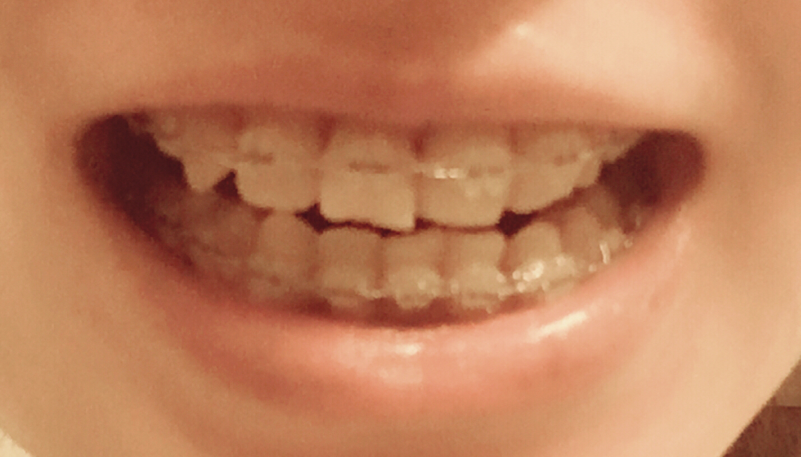
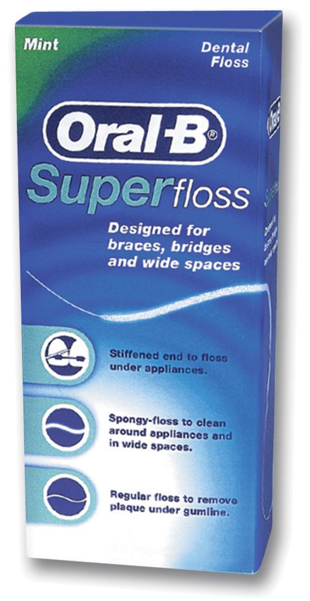
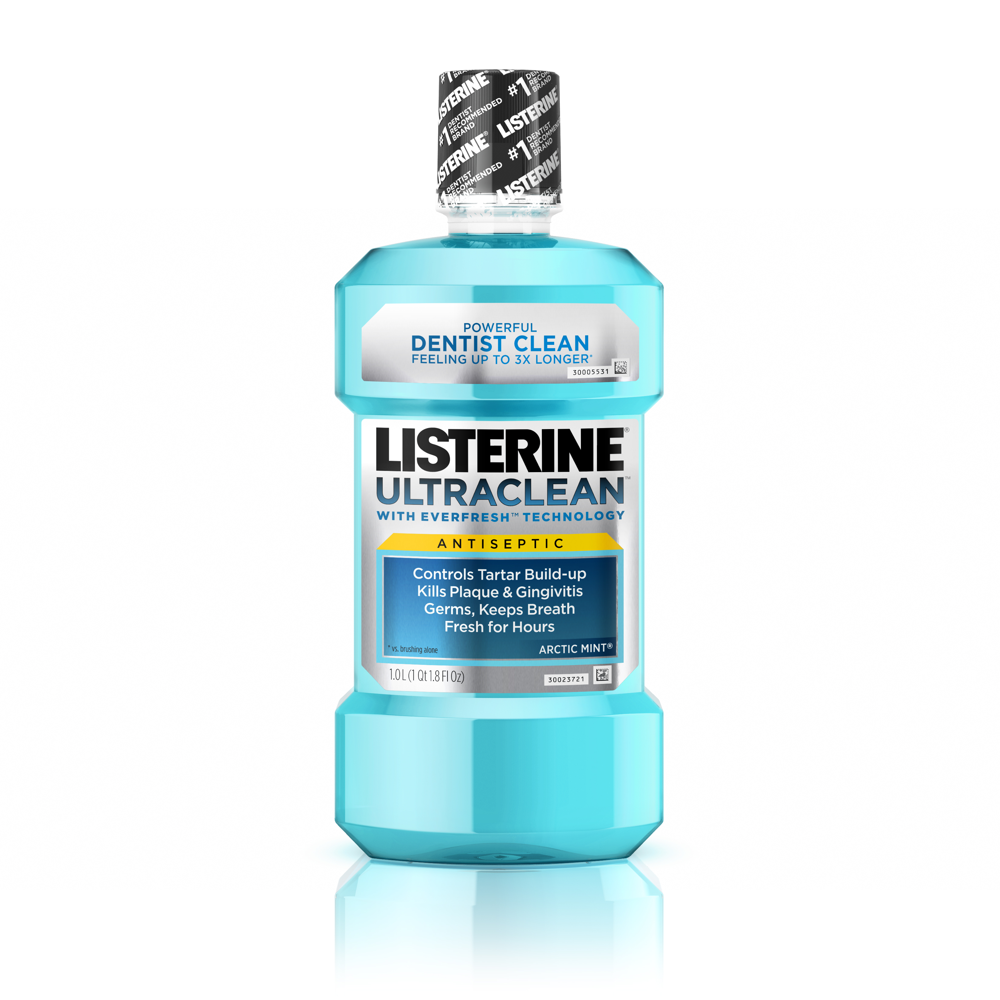

正文: 牙套日记——写在矫正一年的时候
原创 2016-06-22 NN 女码农的小情怀
今天又去见矫正医生，调整，加力。医生说不错，一切都不错，然后我意识到距离我套上牙套，已经整整一年过去了。
这是今天的效果图

虽然还没完全整齐，但是对比最初那触目惊心的牙齿图，已经甚是欣慰了。看见这，便觉得什么牙齿酸软啃不了苹果钢丝扎嘴持续一个月溃疡都是值（bi）得（xu）的。
牙套戴到今天，最大的收获就是，如果可以，还是不戴的好。一不小心说出了内心的真实想法。我重新说一次，最大的收获就是，牙齿，还是整齐的好。
今天不重述那些恐怖的血腥的牙套经验了。说说戴牙套过程中必备的几个神器和戴牙套时的几个注意事项吧。
先说神器，首推waterpik。这东西真的好用，我戴了牙套后，两个manager都和我推荐过，于是我把买了很久一直闲置的它翻出来。真是省时省力。
其次是牙线。戴了牙套后，最初使用的是整牙处给的穿针引线的牙线，每次耗时不说，还累。后来去了例行检查牙医那里洗牙，他们送了oral-b的一种专门给矫正人用的牙线，好用极了。
除此之外，牙间刷在出门在外不方便携带waterpik也没时间用牙线的时候极为有用。上次出去玩zz同学需要牙签，我送了他一个牙间刷，他深深的爱上了这个，称之为“实在是太好用了。”
另外一把好用的电动牙刷和漱口水也是必不可少的。
关于电动牙刷，对sonicare和oral-b的好坏很多人争执不下，我个人觉得sonicare挺好用的，但是也有牙医推荐oral-b，所以随便哪个吧。
漱口水我推荐Listerine，可以选择含酒精或者是Zero的。我问过牙医差别，牙医说没什么本质差别，他个人喜欢有酒精的，用过了很爽。我最初也用有酒精的，每次用漱口水都被辣的哭一场，后来习惯了好些，最近试了试Zero的，感觉不错。
再多说一句关于漱口水的。我在去年7-8月用过一段佳洁士的漱口水，结果牙齿上开始有黄色的色斑，我当时还天真的以为那段时间太忙喝了点咖啡就导致牙齿着色严重呢。结果去洗牙的时候，护士看了牙就问我，是不是用了佳洁士的漱口水。。。然后告诉我最好不用佳洁士的任何产品，尤其是漱口水，会导致牙齿着色。于是我第一时间把所有佳洁士的产品处理了，现在还有一瓶没开的漱口水在那里，留着洗马桶。。。
以上，就是过去一年里我觉得帮助我走过清洁过程的产品，每一个都好用有价值。
再啰嗦下整牙期间需要注意的。
不要啃任何东西。任何需要撕咬的切成小块吃。我还记得去年11月吃了个大块哈密瓜就硌掉了一个牙齿上的贴片。现在已经养成刀不离手的习惯了，随时准备切切切。
整牙期间注意定期检查和洗牙。美国这边因为整牙和正常牙医分开，所以定期去检查是不是有新的牙洞产生及时修补很重要。矫正前我的门牙有重合，所以牙医没有发现牙洞，随着牙齿变整齐后，才发现门牙有两个小洞。另外整牙期间需要4个月洗一次牙，一般牙齿的保险可以包括一年2次的免费洗牙，另一次就自费吧。
整牙期间注意愉悦心情，坚信满口铁丝的日子总会过去，嘴里的溃疡总会好的，有一天可以在啃苹果时留下整齐的牙印，可以毫无遮掩的放肆大笑，多美好的日子，还有一年应该就能来到了。加油！
微信扫一扫
关注该公众号